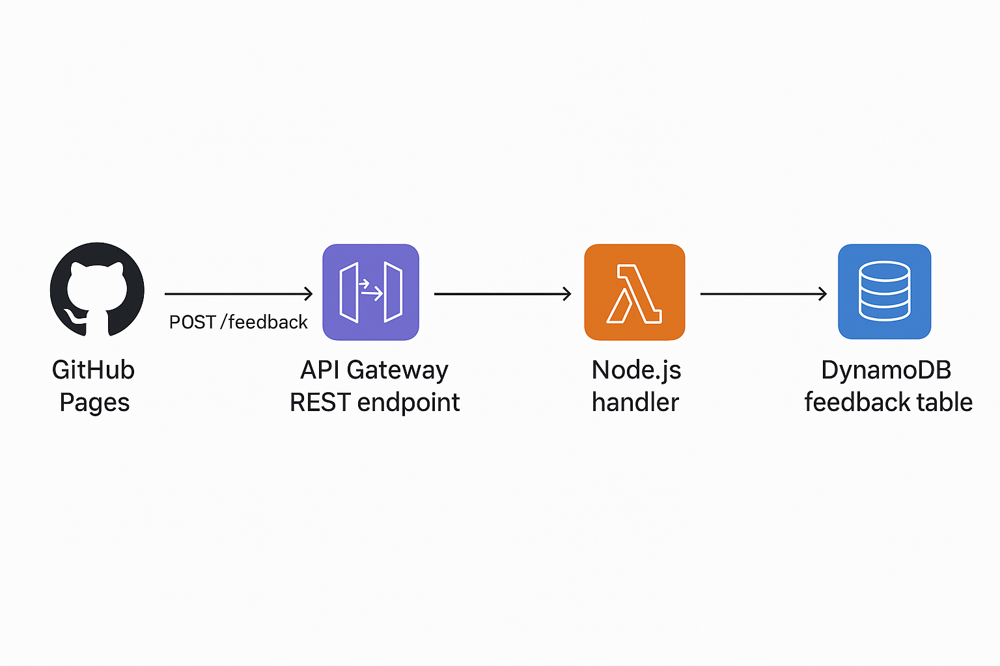
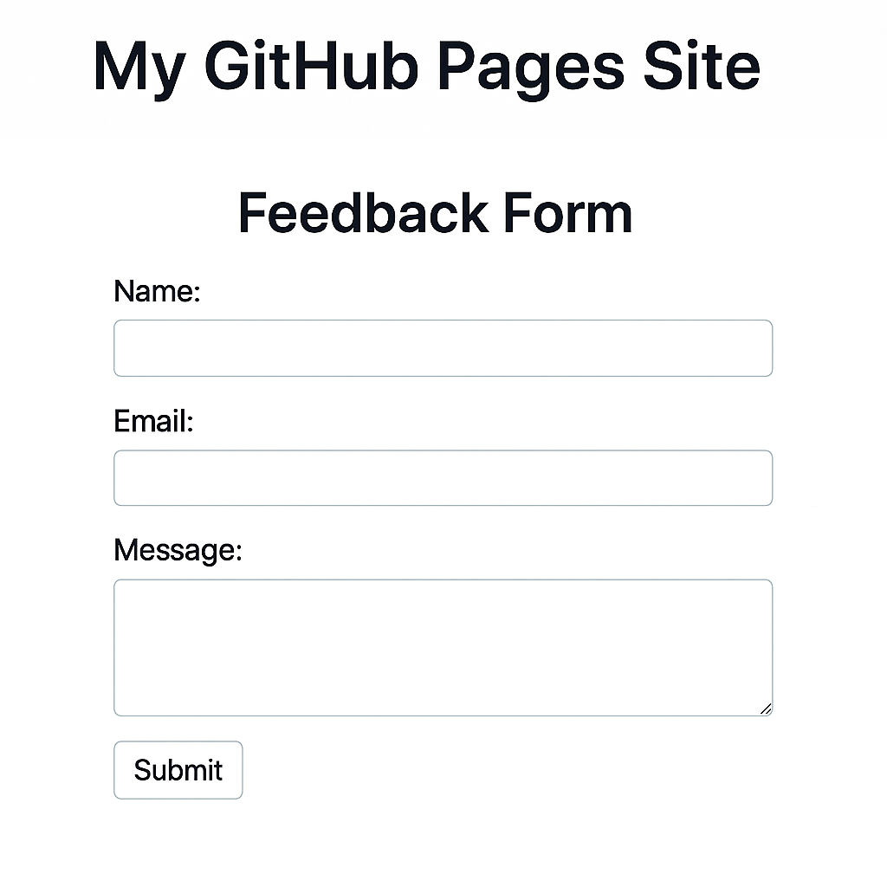

Building a Serverless Feedback Form with AWS and GitHub Pages
Published: 2025
Table of Contents
Project Overview
While preparing for the AWS Associate certification, I wanted a hands‑on project that used real AWS services without spinning up servers or managing infrastructure. The result is a fully serverless feedback‑collection application that you can deploy quickly and run at very low cost.
The app consists of a static frontend that collects feedback and a backend that stores submissions in DynamoDB through an API Gateway endpoint backed by a Lambda function.
- AWS Lambda
- API Gateway
- DynamoDB
- GitHub Pages
Architecture Diagram
Architecture overview
The architecture follows a clean, event‑driven pattern:
- Frontend: Static HTML/JavaScript form hosted on GitHub Pages.
- API Gateway: Exposes a public HTTPS endpoint for feedback submissions.
- Lambda: Validates and processes incoming requests, then writes to DynamoDB.
- DynamoDB: Stores feedback entries with a unique ID and timestamp.
This design is fully managed, highly scalable, and ideal for small applications, prototypes, or learning projects.
Step 1 – Build the frontend
The frontend is a minimal HTML form enhanced with JavaScript to send feedback to the API Gateway endpoint. Hosting it on GitHub Pages keeps deployment simple and free.
GitHub Pages to serve it as a static site.
A clean, event‑driven pipeline with no servers to manage.
Step 1 — Build the Frontend
The frontend is a simple HTML/JS form hosted on GitHub Pages(Free).
Example HTML Form Code
<div class="aws-feedback-app">
<form id="feedbackForm" class="project-form">
<div class="form-group">
<label for="name">Name</label><br>
<input type="text" id="name" required />
</div>
<div class="form-group">
<label for="email">Email</label><br>
<input type="email" id="email" required />
</div>
<p id="status" class="message"></p>
<div class="form-group">
<label for="message">Feedback Message</label><br>
<textarea id="message" rows="4" required></textarea>
</div>
<button type="submit">Submit</button>
</form>
</div>
JavaScript to Send Data to API Gateway
document.getElementById("feedbackForm").addEventListener("submit", async (e) => {
e.preventDefault();
const payload = {
name: document.getElementById("name").value,
message: document.getElementById("message").value
};
const response = await fetch("YOUR_API_GATEWAY_URL", {
method: "POST",
headers: { "Content-Type": "application/json" },
body: JSON.stringify(payload)
});
const result = await response.json();
document.getElementById("status").innerText = result.message;
});
Step 2 – Create the DynamoDB table
Next, create a DynamoDB table to store feedback entries. The schema is intentionally simple and optimized for write‑heavy workloads.
| Attribute | Type | Description |
|---|---|---|
feedbackId |
String (Partition key) | Unique identifier for each feedback entry. |
name |
String | User’s name. |
email |
String | User’s email address. |
message |
String | Feedback content. |
timestamp |
String | ISO‑8601 timestamp of submission. |
You can start with on‑demand capacity mode, which is perfect for unpredictable or low‑volume workloads.
Step 3 — Build the Lambda Function
The Lambda function receives the HTTP request from API Gateway, parses the JSON body, and writes the feedback to DynamoDB.
import { DynamoDBClient, PutItemCommand } from "@aws-sdk/client-dynamodb";
import { v4 as uuidv4 } from "uuid";
const db = new DynamoDBClient({ region: "us-east-1" });
export const handler = async (event) => {
const body = JSON.parse(event.body);
const item = {
feedbackId: { S: uuidv4() },
name: { S: body.name },
message: { S: body.message },
timestamp: { S: new Date().toISOString() }
};
await db.send(new PutItemCommand({
TableName: "FeedbackTable",
Item: item
}));
return {
statusCode: 200,
headers: { "Content-Type": "application/json" },
body: JSON.stringify({ message: "Feedback submitted successfully!" })
};
};
Step 4 — Create the API Gateway Endpoint
Configure a REST API with:
Create a REST API (or HTTP API) in API Gateway and connect it to your Lambda function using Lambda proxy integration.
- POST /feedback route
- Lambda Proxy Integration
- CORS enabled
Example CORS Headers
Access-Control-Allow-Origin: *
Access-Control-Allow-Headers: Content-Type
Access-Control-Allow-Methods: POST
Step 5 — Add Monitoring
Use CloudWatch to track:
Once everything is wired up, use Amazon CloudWatch to monitor:
- Lambda invocation count
- Errors
- Duration
- DynamoDB read/write metrics
This visibility helps you catch misconfigurations early and understand how your application behaves under real traffic.
Step 6 — Add CI/CD
To streamline deployments, you can use GitHub Actions to automatically deploy both the Lambda function and the frontend whenever you push changes to your main branch.
Lambda Deployment Workflow
name: Deploy Lambda
on:
push:
branches: [ main ]
jobs:
deploy:
runs-on: ubuntu-latest
steps:
- uses: actions/checkout@v4
- run: npm install
- run: zip -r lambda.zip .
- run: aws lambda update-function-code --function-name FeedbackFunction --zip-file fileb://lambda.zip
Frontend Deployment Workflow
name: Deploy Frontend
on:
push:
branches: [ main ]
jobs:
deploy:
runs-on: ubuntu-latest
steps:
- uses: actions/checkout@v4
- uses: actions/upload-pages-artifact@v3
with:
path: "./"
- uses: actions/deploy-pages@v4
Why this architecture works well
- Fully serverless: No servers to patch, scale, or maintain.
- Auto‑scaling: Lambda and API Gateway scale automatically with incoming traffic.
- Cost‑efficient: For low to moderate usage, most of this stack fits comfortably in the AWS Free Tier.
- Secure by design: IAM roles, managed services, and API Gateway provide strong security primitives.
- Easy to extend: You can add email notifications, analytics, dashboards, or authentication later.
Next steps
Once the basic feedback form is working, here are some ideas to take it further:
- Send email notifications using Amazon SES when new feedback is submitted.
- Add a protected admin page to view feedback entries from DynamoDB.
- Integrate Amazon Cognito to require sign‑in before submitting feedback.
- Add CloudWatch dashboards for a visual overview of traffic and errors.
Built as a learning project while preparing for the AWS Associate certification—small in scope, but packed with real‑world patterns you can reuse in larger systems.